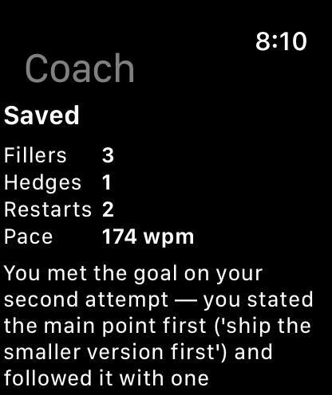
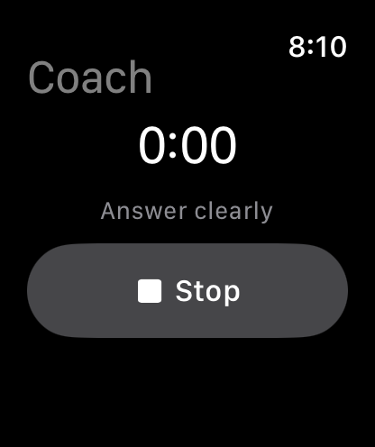

Speaking practice for Apple Watch and Muse
Practise a spoken answer on your watch. Muse remembers it on every device.
Tap Record on your Apple Watch and answer a question out loud. Your fillers, hedges, restarts and pace are counted from the transcript and saved to one record. Muse, Meta's assistant, reads that record on your phone or laptop and suggests what to practise next.

Transcript, first 6 seconds
Um, so I think the main point is, uh, basically that we should ship the smaller version first.
One capture, from your wrist to your record
About 15 seconds from Stop to a saved session. Follow one sentence through the four steps.
-
Step 1 of 4
Record on the watch
Pick a goal, tap Record, answer, tap Stop. Up to three minutes.

-
Step 2 of 4
Transcribed by Meta
Meta's speech-to-text model keeps the “um” and “uh” that most transcripts clean up.
Um, so I think the main point is, uh, basically that we should ship the smaller version first.
muse-voice-transcribe-1.0
-
Step 3 of 4
Counted by code
A fixed word list, in English or French, counts each habit. No model touches the numbers.
- 3 fillers
- 1 hedge
- 2 restarts
- 174 wpm
-
Step 4 of 4
One exercise
Muse Spark Open reads the transcript and your goal, then writes one observation and one exercise.
Next time, answer in one take: “The main point is…”, then “because…”. Skip “I think” and “basically”.
muse-spark-open-1026 on Baseten
What one 14-second answer shows
Um, so I think the main point is, uh, basically that we should ship the smaller version first. Sorry, let me restart. The main point is ship the smaller version first because it lets us test with real users users this week.
- Filler
- Hedge
- Restart
- Repeated word
“You met the goal on your second attempt: you stated the main point first (‘ship the smaller version first’) and followed it with one supporting detail. The first attempt was hedged with fillers and led to a restart before you delivered the clean version.”
Counted from the transcript with a fixed English word list. The model writes the observation; it never supplies a number.
Your watch records it. Muse reads it on any device.
The watch keeps nothing of its own. Goals, sessions and exercises live in one record, and every device reads the latest version of it.

Muse chat, example
How did my last practice go?
Your watch capture for “Answer clearly” had 3 fillers, 1 hedge and 2 restarts at 174 wpm. On the second try you put the main point first.
What should I practise next?
One answer in one take: “The main point is…”, then “because…”.
Scheduled task, Sunday 4:40 pm
Optional, 2 minutes: answer one question in two sentences. Main point first, then one supporting detail.
Based on your goal “Answer clearly” and an exercise you skipped. Nothing was recorded.
Planned A Mac app for on-screen and meeting capture into the same record.
Most new tools give you another assistant. Comms Coach gives the assistant you already use a memory of how you speak, on every device.
- First attempt
- Um, so I think the main point is, uh, basically that we should ship the smaller version first.
- Second attempt
- The main point is ship the smaller version first because it lets us test with real users this week.
What it measures, and what it doesn't claim
- Counted by code
- Fillers, hedges, restarts, repeated words and pace, from the automatic transcript. A transcript can miss or invent a word, and everyone in the clip is counted.
- Written by a model
- One observation and one suggested exercise per capture, from Muse Spark Open.
- Not claimed
- Improvement over time. One session can't show change, so that field stays empty until there is a method to compare sessions.
- Your audio
- Uploaded once, transcribed, then discarded. The record keeps the transcript, the counts and a fingerprint of the file.
- Your record
- Muse writes only when you ask. Every write returns a receipt, edits are versioned, and a correction shows up on every device.
- This page's example
- A scripted test clip run through the live pipeline, on a test account with no personal data.
Same record, second profile. In development.
French speaking practice
A short spoken debrief in French becomes a few phrases worth fixing. You confirm each one, repair it, and reuse it later on a new prompt. Confirmed phrases export to Anki. The learner sets the target level; nothing here measures or claims one.
- Said
- « J'ai besoin de ça. »
- Repaired
- « J'en ai besoin. »
- Suggestedfrom your spoken debrief
- Confirmedby you or a tutor
- Repairedsaid correctly in a retry
- Reusedunaided, days later, on a new prompt
[FOUNDER NOTE: one or two sentences in Kaung Zin's own words]